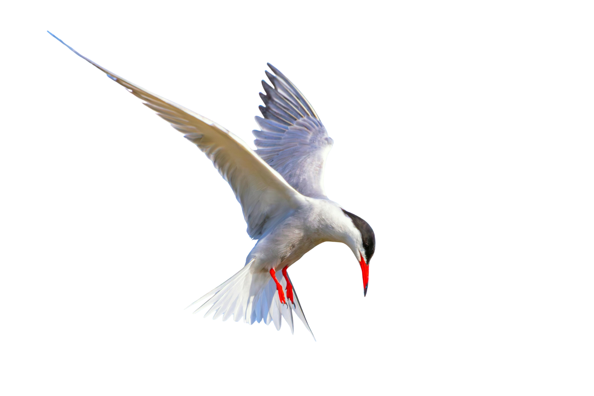

Come explore all the ways we work to help protect coastal areas!
Categories

Oyster Restoration
Follow our journey to replenish the oyster population in the region so that they can help clean and filter the water.
Clean Water

Pollution Prevention
We establish regional water quality goals and work with certified partners to track the progress of reducing pollution levels.
Clean Water

Wetland Restoration
We partner with the city to restore former wetland areas back to their natural state for both wildlife and flood protection.
Habitat Preservation

Legal Advocacy
We advocate for sustainable policies and regulations at the local, state, and federal levels.
Legislative Activities

Youth Education
We partner with local schools to give teenagers access to classes on environmental science.
Education